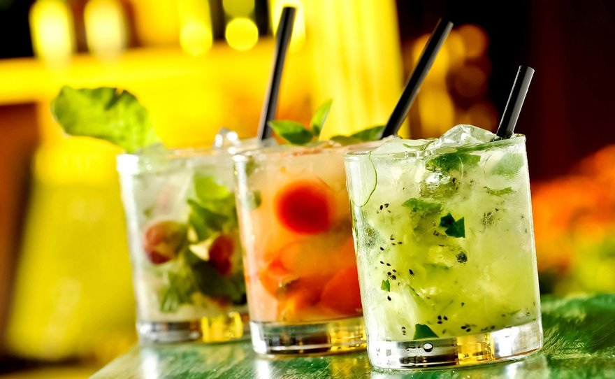
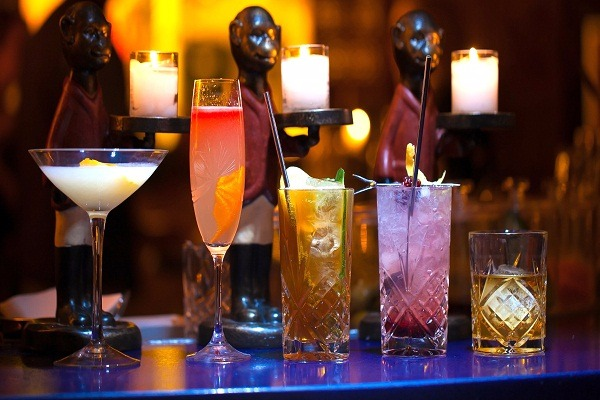

История коктейлей
История коктейлей насчитывает неполные 200 лет. Судя по книге Джерри Томаса «Как смешивать напитки» , в середине XIX века коктейли представляли собой смесь крепкого алкоголя, сахара, воды и биттера (травяного ликера), только позже в состав стали входить слабоалкогольные ингредиенты.
Самым правдоподобным выглядит следующее объяснение происхождения термина: коктейлями называли лошадей с обрезанным хвостом. Эта метка обозначала, что скакун не чистокровный, а полукровка. Затем так стали говорить о людях, стремящихся попасть в высшее общество, но не обладавших соответствующим происхождением и воспитанием. Возможно, разбавленное водой спиртное тоже становилось как бы «полукровкой», теряло «чистоту происхождения», за что и получило соответствующее название.
Коктейли считаются американским изобретением, но вдохновением для них послужили британские пунши, популярные в XVIII веке: в спиртное добавляли фрукты, специи, разнообразные дополнительные ингредиенты и подавали все это в больших чашах.
Первое употребление слова cocktail в значении, отличном от «лошадь с подрезанным хвостом», встречается в английской газете 1798 года и означает имбирь. Возможно, потому, что (по версиям некоторых исследователей) старым лошадям ставили имбирные свечи, после чего животное становилось резвым и задорным, периодически взбрыкивало крупом (cock tail).
Коктейли
Интересные факты
- Многие коктейли связаны в своей истории создания с теми или иными событиями или же конкретным историческим личностями.
- Трубочка для коктейля – изделие запатентованное, появившееся в 1888 году в Соединенных Штатах. До этого времени напитки-ассорти с алкоголем пили через толстые макаронины или сухие соломинки, а если их не было под рукой, - в ход шла свернутая трубочкой бумага.
- Оказывается, не каждое соединение напитков можно считать коктейлем, а только если в его состав входит не менее трех компонентов.

- Еще один интересный факт - порция напитка невероятного объема была приготовлена во времена Вильгельма III: на нее потратили более 2300 л бренди и сока, полтонны сахара и около 25 тысяч лимонов.
- Многих привлекает необычная подача и своеобразное шоу, которое может устроить опытный бармен. Так, среди коктейлей с интересной подачей не последнее место занимает «Ледяной выстрел». Его подают в рюмке изо льда, которую делают из воды, замораживая ее в специальной форме. Необычный способ подачи делает этот коктейль особенно привлекательным.

- В барах Нью-Йорка посетителям подают «Русский коктейль» — бармен меж собой смешивает составляющие его 3 компонента. В начале берется 75 мл. водки, и по 25 мл одного и 50 мл. другого ингредиента, после смешивают все меж собой. И лишь попробовав его посетитель понимает – все три компонента и есть самая обыкновенная водка.
- Самым древним коктейлем с содержанием алкоголя есть напиток, обнаруженный на берегах реки Тигр – его обнаружили в сосуде из глины и насчитывает он в себе выдержку на протяжении 5 000 лет. Сам коктейль состоит из сока яблок, меда, винной кислоты и ячменных зерен
- Самой первой алкогольной вечеринкой была зафиксирована в Америке. В штате Сент-Луис в 17 году прошлого века и то самое удивительное – само мероприятие проводили в доме, где сегодня размещена официальная резиденция Архиепископа.